LG Washer, Dryer, Refrigerator & Range Repair in Orange County
Refrigerators that stop cooling, washers throwing LE, OE, and UE codes, and dryers that won't heat. We know LG's direct-drive washers and its linear-compressor refrigerators inside out. Same-day service available.
5.0 · 156 Google reviewsMon–Sat, 8am–7pm.
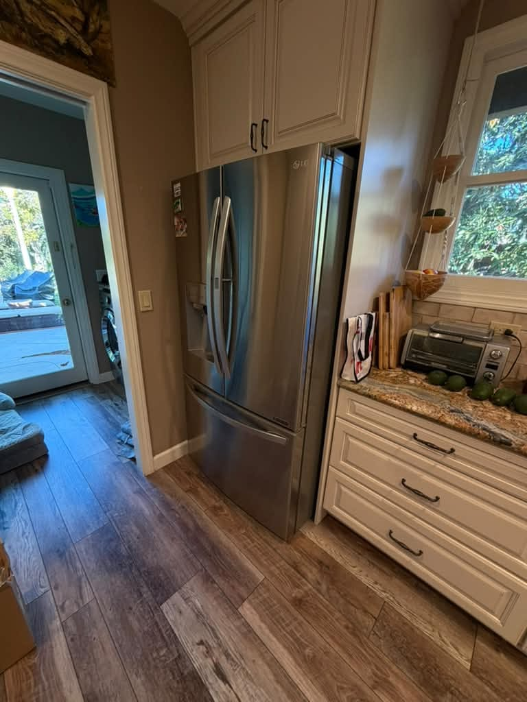
What to expect
- Flat $99 diagnostic feeApplied toward the repair if you approve the work.
- Written quote firstItemized, before any work starts.
- 90-day parts, 30-day laborWarranty on every repair.
- Same-day serviceCall or request online.
Family-owned since 2017 · Licensed, bonded & insured
Recent LG Repairs
Real LG repairs our technicians completed recently, with the city of each job.

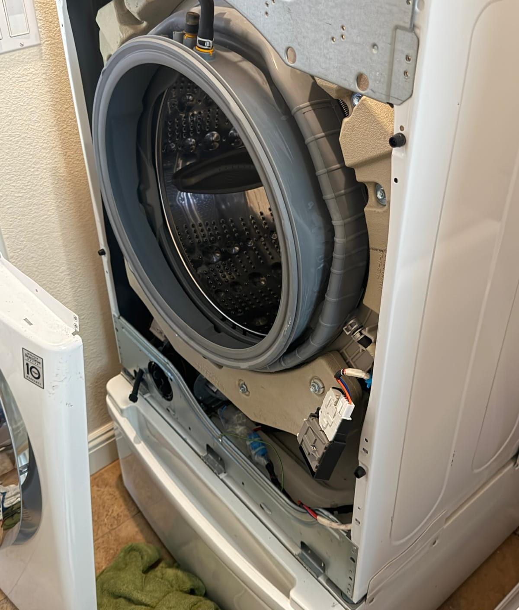
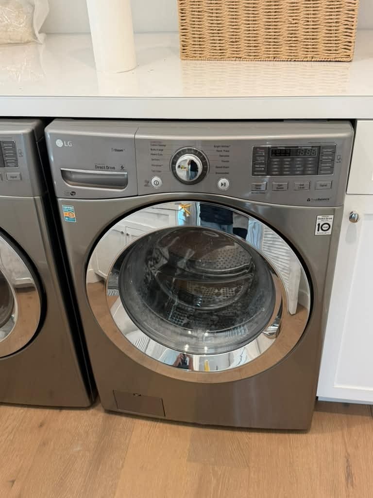

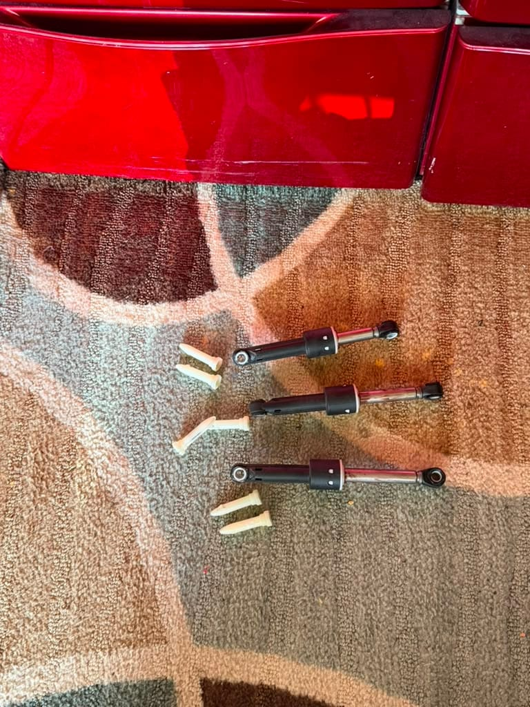
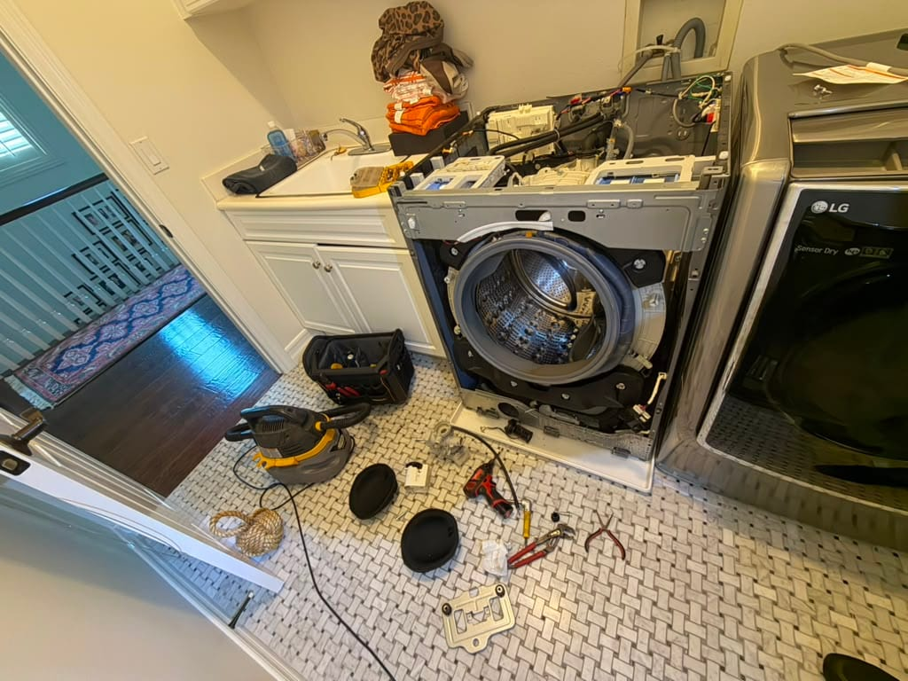
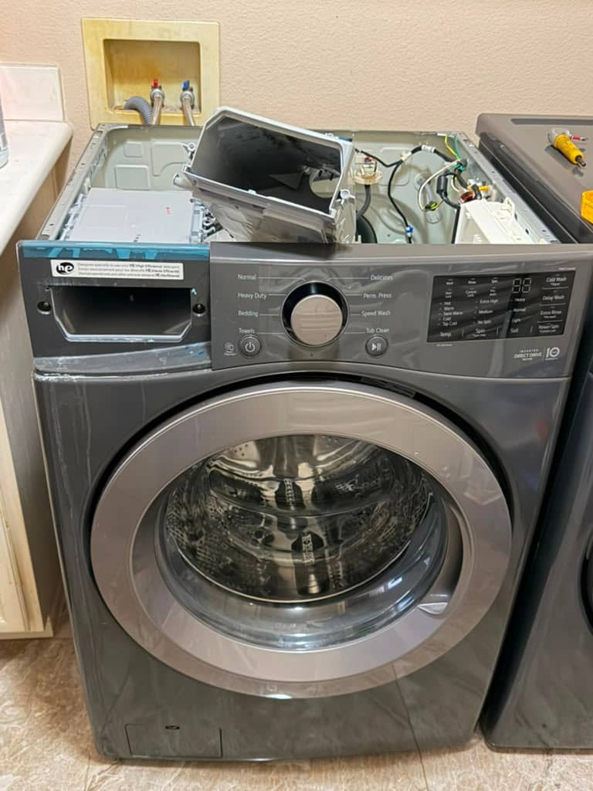
Show all 16 LG repairs
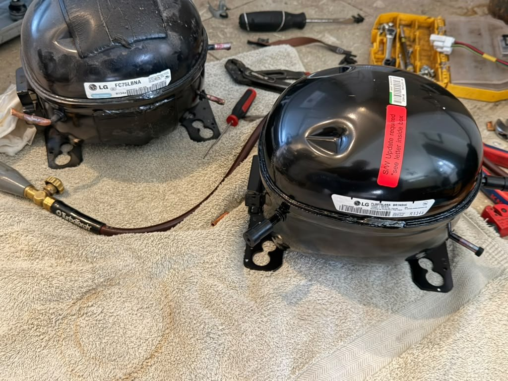
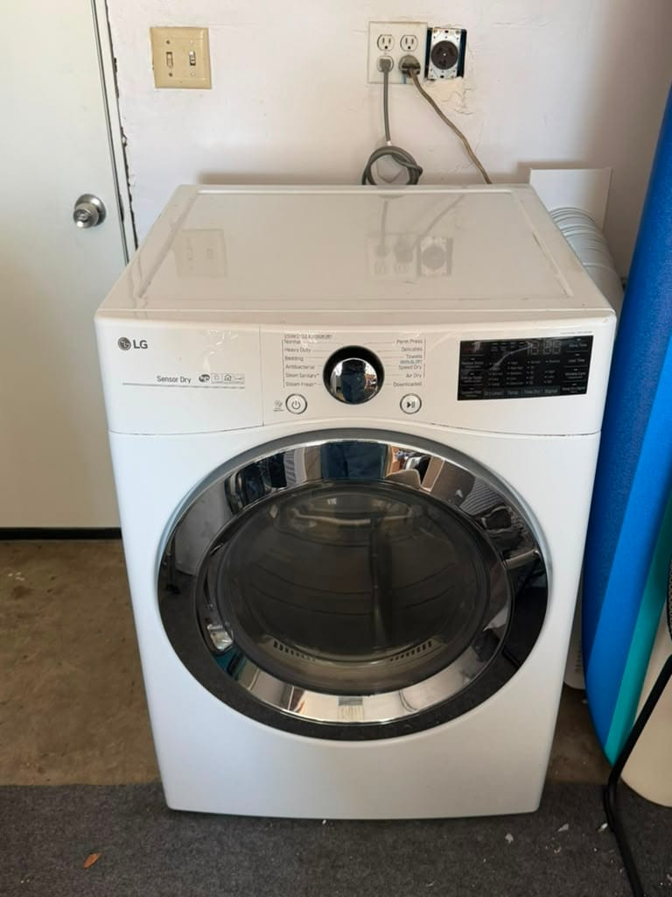
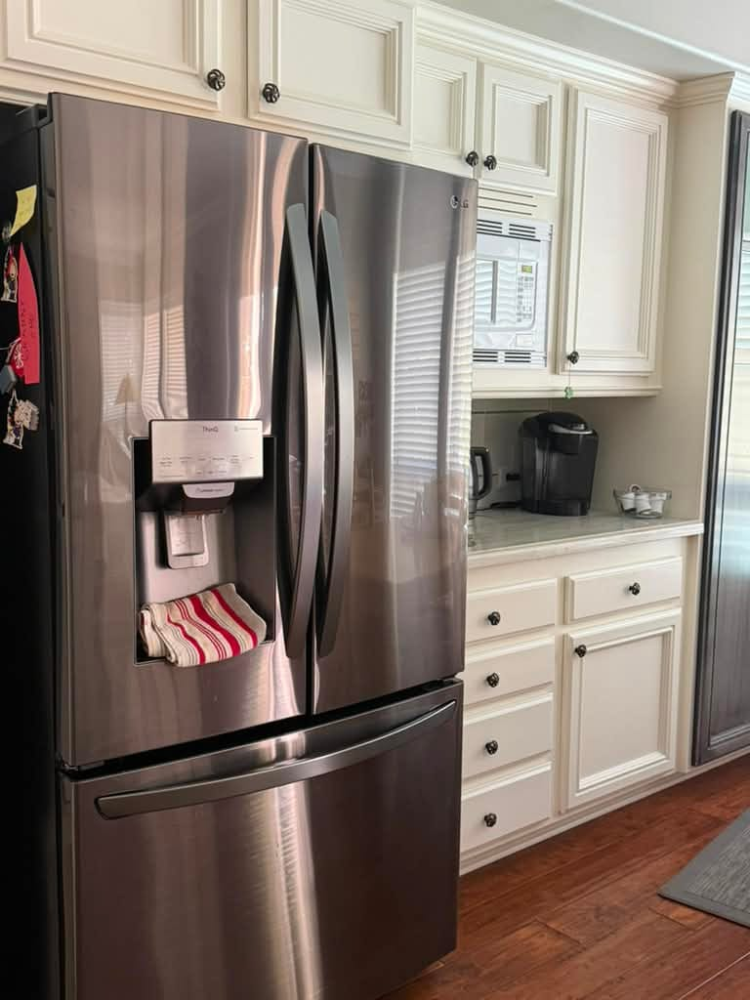
Rancho Santa Margarita, CA
LG Refrigerator Water Filter & Housing Replacement

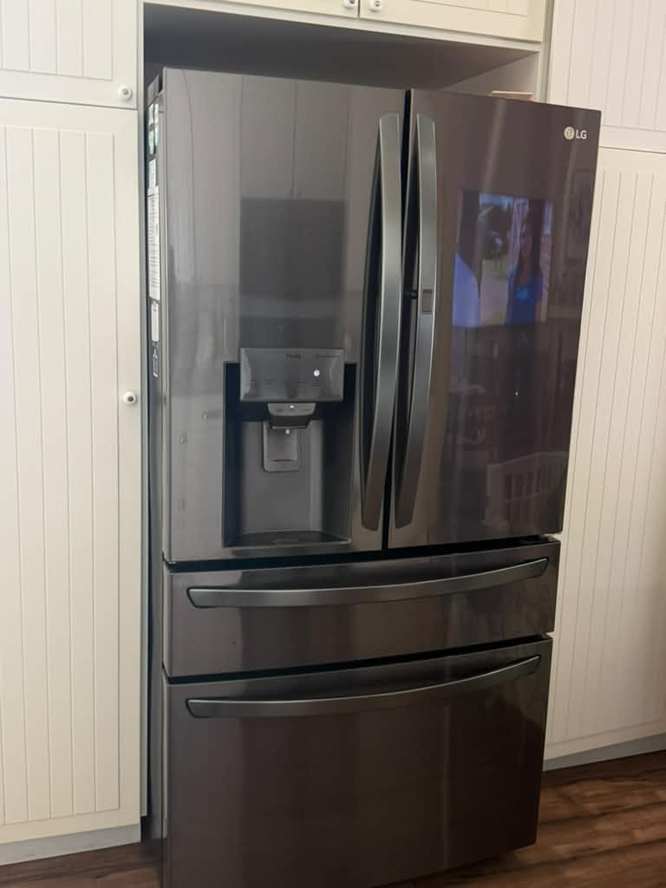
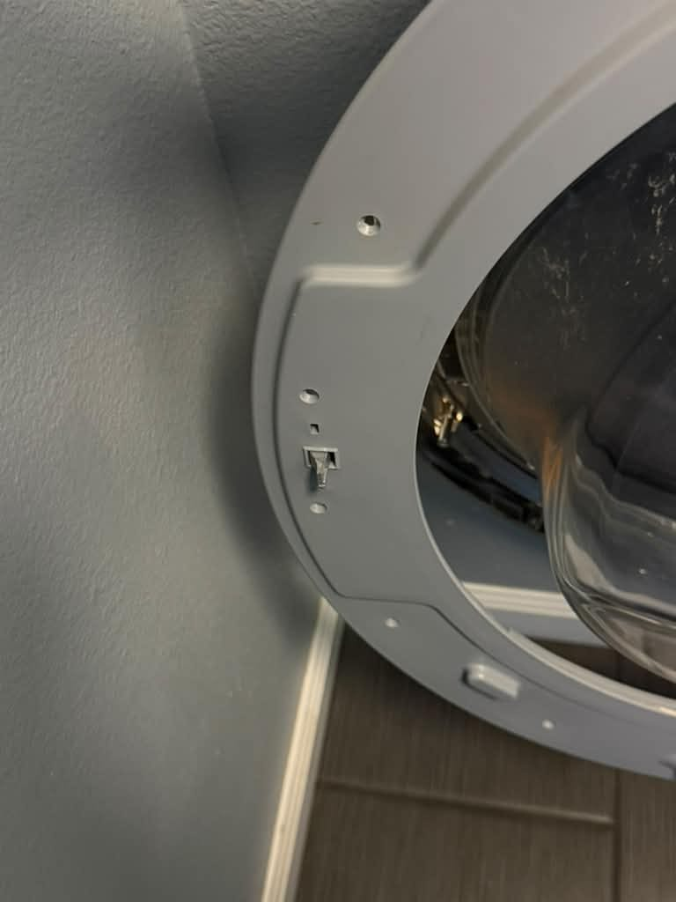
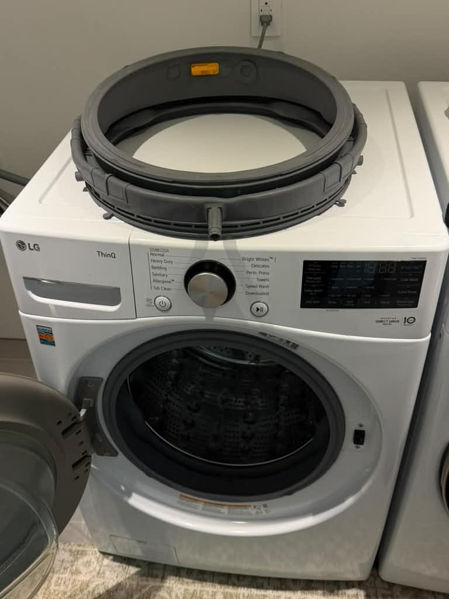
Chasing a cooling problem? See our Orange County refrigerator repair service, or our dryer repair service.
See all recent repairsWhat Our Customers Say
From our 156 verified 5-star Google reviews
AG was wonderful - quick and easy! Loved working with him. Highly recommend :)
Called AG and received a quick response. Was polite and efficient. Very reasonable and honest. Fixed my stove top and freezer.
Fast and professional good service on my dryer
From Call to Fixed: How an LG Repair Works
Here is exactly what happens from your first call to a fully working LG appliance.
Request a RepairCall or Request Online
Reach us at (949) 629-5365 or submit the contact form. Share the model number and the symptom or error code, and we schedule you the same day when possible.On-Site Diagnosis
A technician arrives in a 2-hour window and tests the compressor, pump, motor, sensor, or board to find the exact fault, rather than guessing at parts.Upfront Quote
You get a clear, itemized quote before we start, and we tell you if the LG part is likely under warranty. The $99 diagnostic fee is credited toward the repair if you proceed.Repair & Warranty
Common LG pumps, dampers, and elements ride in the van, so most repairs finish the same day. Every repair carries a 90-day parts and 30-day labor warranty: if the same problem returns within 30 days, we come back at no charge.
Pricing & Discounts
- $99 diagnostic fee: applied toward your repair when you approve the work. If you decide not to proceed, the $99 covers the visit.
- Multi-unit visits: first unit $99, each additional unit on the same visit $49.
- 20% off labor for repeat customers and seniors 60+ (cannot combine with other offers).
Estimates vary by brand, part availability, and diagnosis. Final quote is provided before repair. See full pricing guide
Diagnostic visit$99
- Applied toward the repair when you approve the work
- Itemized written quote before any work starts
- You decide whether to proceed
Refrigerators, Washers, Dryers, and Ranges: Every LG We Repair
LG builds some of the most popular kitchens and laundry rooms in Orange County, from InstaView refrigerators to direct-drive front-loaders. We service the full lineup, and we know the parts and codes specific to each. For refrigerators, our LG refrigerator error code guide explains what the display is telling you, and for washers, our LG washer repair guide covers the common codes and fixes.
- Refrigerators (French Door, InstaView, Side-by-Side)
- The linear (inverter) compressor is LG's signature part and its most common failure. We handle cooling loss, warm fresh-food sections, evaporator-fan faults, and ice-maker and dispenser problems.
- Front-Load & TWINWash Washers
- LG's direct-drive front-loaders are known for LE motor codes, OE drain faults, and worn shock absorbers that let the drum shake. We carry the pumps, door locks, and dampers these units need.
- Top-Load Washers
- Direct-drive inverter top-loaders that run quiet until a bearing, rotor, or Hall sensor wears. UE unbalanced errors and off-balance shaking are the calls we handle most on these.
- Electric & Gas Dryers
- Vented electric and gas dryers, including DUAL Inverter models. A dryer that runs cold usually needs a heating element, thermistor, or igniter, and a clogged vent is the hidden culprit behind most no-heat calls.
- Dishwashers (QuadWash, TrueSteam)
- Direct-drive LG dishwashers that throw OE drain and IE fill errors, leave standing water, or stop cleaning. A clogged filter, jammed drain pump, or failed inlet valve is the usual cause.
- Gas & Electric Ranges & Ovens
- Freestanding and slide-in LG ranges plus wall ovens. A bake element that won't heat, a weak gas igniter, or a drifting temperature sensor are the faults we meter and repair the same day.
Compressor Failures, Error Codes, and LG's Known Weak Points
LG appliances fail in specific, recognizable ways. These are the repairs our technicians handle most often on Orange County homes.
- Refrigerator Not Cooling (Linear Compressor)
- The freezer thaws and the fresh-food side drifts warm, often with no error code. On 2014 and later LG fridges this usually points to the linear compressor, which is frequently still under LG's extended 10-year parts warranty. We confirm the fault before you replace the fridge.
- Washer LE Motor Error
- The direct-drive motor is overloaded or locked and the cycle stops. Causes range from a tangled load to a worn rotor and stator, a failed Hall sensor, or a seized bearing. We test each part before quoting so you do not replace a whole motor for a sensor.
- Washer OE Drain Error
- The washer cannot pump water out. Almost always a clogged drain-pump filter full of lint and coins, and clearing it fixes many cases. If it is clean, the drain pump has failed or the hose is kinked. We find the exact blockage.
- Washer UE / Shaking and Walking
- A UE on every load, with violent shaking or a washer that walks, usually means worn shock absorbers, tired suspension, or a failing bearing. We recently swapped the shocks on an LG front-loader in Fountain Valley for exactly this fault.
- Dryer Won't Heat
- Tumbles but blows cold. On electric models it is the heating element or a thermistor; on gas it is the igniter or valve coil. A blocked vent overheats and trips the cutoff, so we check airflow as part of every no-heat repair.
- Dishwasher OE or IE Fault
- Standing water (OE) or a dishwasher that won't fill (IE) traces to a clogged filter, a jammed drain pump, or a failed inlet valve. We clear the blockage and confirm the pump and valve before returning the unit to service.
- Ice Maker or Water Dispenser Fault
- An LG ice maker that stops filling is often the water inlet valve, the ice-maker assembly, or a frozen fill tube, not the whole door. We test the valve and assembly so you are not paying to replace a part that still works.
- Oven Won't Reach Temperature
- A bake element that stays cold, a weak gas igniter, or uneven baking usually means a failed element or a drifting temperature sensor. We meter the element and sensor to pin down which one before quoting parts.
The LG Linear Compressor: Why LG Refrigerators Stop Cooling
If your LG refrigerator slowly gave up, the freezer thawed, and the food spoiled with no dramatic noise or error on the display, you are not imagining it, and you are far from alone. The heart of nearly every modern LG refrigerator is the linear inverter compressor, a design LG markets heavily for being quiet and efficient. It genuinely is both. But on a large number of 2014 and later models, that compressor has also proven prone to failing early, and when it fails the fridge simply stops getting cold.
Here is the part most Orange County homeowners do not know, and the reason it is worth a phone call before you haul the fridge to the curb. LG extended the warranty on the linear compressor to 10 years for parts on many affected models. So even a refrigerator that feels too old to bother with often still has a covered compressor. That completely changes the repair-or-replace decision, because the most expensive single part may cost you nothing.
What we do is diagnose honestly. A warm LG fridge is not always the compressor: it can be the sealed system elsewhere, the evaporator fan, a defrost fault, or a control board, and each of those is a very different repair and price. We confirm exactly which one it is, tell you plainly whether the compressor is likely under LG's warranty, and handle the labor to get you cold again. When the numbers say replace instead, we tell you that too. Either way you decide with real information, not a guess.
LG Repair Costs: What to Expect in Orange County
A new LG washer or dryer runs roughly $700 to $1,300, so for most faults repair is the clear financial choice. These are typical Orange County ranges, not quotes.
| Repair Type | Typical Range |
|---|---|
| Service call / diagnostic: Orange County market average (often credited toward repair) | $75 – $100 |
| Washer drain pump (OE) / drain clog | $180 – $340 |
| Washer stator / rotor / Hall sensor (LE) | $200 – $400 |
| Washer shock absorbers / suspension (UE) | $220 – $460 |
| Dryer heating element / thermistor / thermal fuse | $180 – $340 |
| Refrigerator linear compressor / sealed system | $450 – $850 |
| Refrigerator control board / evaporator fan | $220 – $430 |
| Dishwasher drain pump / control board (OE/IE) | $180 – $360 |
| Oven bake element / igniter / sensor | $180 – $360 |
Estimates vary by brand, part availability, and diagnosis. Final quote is provided before repair.
Our company diagnostic fee is a flat $99 in Orange County, credited toward the repair if you proceed. A failed LG linear compressor is often still covered under LG's 10-year parts warranty, which can reduce your out-of-pocket cost significantly. See our full appliance repair cost guide for broader Orange County pricing context.
Ready to schedule your LG repair?
LG repair across Orange County
Universal Appliances Repair Group Inc. provides LG appliance repair across Orange County, California, including front-load and top-load washers, electric and gas dryers, French-door and side-by-side refrigerators, dishwashers, and gas and electric ranges. Common repairs include linear-compressor cooling failures, the LE motor, OE drain and UE unbalanced-spin washer errors, and dryers that will not heat.
We serve Santa Ana, Irvine, Anaheim, Huntington Beach, Fountain Valley, and surrounding cities, with same-day service available. Call (949) 629-5365 or book online to schedule an LG repair visit.
What Orange County LG Owners Ask Us
The most common questions from LG owners across Santa Ana, Irvine, Huntington Beach, Fountain Valley, and surrounding Orange County cities.
Still have a question? Call (949) 629-5365.
Yes. LG laundry is one of the repairs we handle most. We service LG front-load and TWINWash washers, direct-drive top-loaders, and both electric and gas dryers across Orange County, and we carry the common drain pumps, door locks, shock absorbers, heating elements, and thermistors on the van. LG builds its washers around a direct-drive inverter motor, so we diagnose the LE, OE, and UE codes those machines throw rather than swapping parts blindly. Call (949) 629-5365 for same-day availability in Santa Ana, Irvine, Huntington Beach, Fountain Valley, and surrounding cities.
An LG refrigerator that slowly stops cooling, with the freezer thawing and the fresh-food section drifting warm, most often points to the linear (inverter) compressor. LG's linear compressor is the defining part of its refrigerators, and it is a known weak point on many 2014 and later models. Before you replace the fridge, it matters: LG extended the parts warranty on the linear compressor to 10 years on many units, so the part is frequently still covered even when the fridge feels old. We diagnose whether it is the compressor, the sealed system, the evaporator fan, or a control board, and if it is the compressor we advise you on the warranty and handle the labor.
LE is a motor error on LG direct-drive washers: the motor is overloaded or locked and the control board has stopped the cycle. The common causes are an overloaded or badly tangled load, a worn rotor and stator, a failed Hall sensor that tells the board where the motor is, or a seized bearing. Sometimes it clears with a lighter load, but a repeating LE points to a real motor-side fault. We test the rotor, stator, sensor, and bearing to find which one failed before quoting, so you are not paying for a whole motor when a sensor is the problem.
OE is a drain error: the machine could not pump the water out in time. On an LG washer the number one cause is a clogged drain-pump filter packed with lint, coins, and hair, and clearing that filter fixes many cases with no parts at all. If the filter is clean and water still stands, the drain pump has failed, the drain hose is kinked, or the pressure sensor is misreading. The same code on an LG dishwasher usually means a blocked filter, a jammed drain pump, or a clogged drain line. We find the exact blockage and repair it, usually the same day.
UE means the load is unbalanced and the machine cannot safely reach spin speed. An occasional UE on a single heavy item, like a comforter, is normal. But a UE that shows on every load, along with violent shaking or a washer that walks across the laundry room, usually means the shock absorbers and suspension have worn out or a spider arm and bearing are failing. We recently replaced the shock absorbers on an LG front-loader in Fountain Valley for exactly this. We inspect the shocks, springs, and bearing and replace the worn parts so the drum runs steady again.
An LG dryer that tumbles but blows cold air has usually lost its heating element or a thermistor on electric models, or its igniter or gas valve coil on gas models. A blocked vent is the hidden cause behind most no-heat calls, because trapped heat trips the thermal cutoff, so we check airflow as part of every repair. LG dryers also throw duct-restriction warnings when the exhaust is clogged. We test the element, thermistor, thermal fuse, and igniter to find the real failure rather than swapping parts, and we carry the common LG heating parts on the van.
In most cases, yes. LG laundry and kitchen parts are widely available and reasonably priced, and the common faults (a drain pump, shock absorbers, a heating element, a Hall sensor, or a door lock) cost a fraction of a new machine. The one repair that needs a closer look is a failed linear compressor in an LG refrigerator: it is a bigger job, but the part is often still under LG's extended 10-year warranty, which changes the math in your favor. We give you a written quote before any work, and for a refrigerator we tell you plainly whether repair or replacement makes more sense with real numbers.
Our company diagnostic fee is $99 in Orange County, credited toward the repair if you proceed. Typical LG repairs run $180 to $340 for a washer drain pump, $220 to $460 for washer shock absorbers or suspension, $180 to $340 for a dryer heating element or thermistor, and $220 to $430 for a refrigerator control board or evaporator fan. A linear compressor or sealed-system repair runs more, though the compressor part is often still under LG's 10-year warranty. Estimates vary by model and part availability; we quote before starting.
We serve all of Orange County including Santa Ana, Irvine, Anaheim, Huntington Beach, Fountain Valley, Costa Mesa, Mission Viejo, Fullerton, Garden Grove, Lake Forest, Newport Beach, Orange, and surrounding cities. LG is one of the most common brands in Orange County kitchens and laundry rooms, so we service it across every neighborhood daily. Call (949) 629-5365 to confirm same-day availability in your area.
One LG Kitchen & Laundry, Every Appliance Covered
An LG refrigerator usually shares the house with an LG washer, dryer, and range. One call handles your whole lineup, from the linear compressor to the drain pump.
- Refrigerator RepairFrench-door and side-by-side units: linear-compressor cooling loss, defrost faults, and ice-maker problems.
- Washer RepairFront-load and top-load direct-drive: LE, OE, and UE codes, no-spin, leaks, and worn shock absorbers.
- Dryer RepairElectric and gas dryers that won't heat, take too long, or won't start: elements, thermistors, and igniters.
- Dishwasher RepairNot draining, not filling, standing water, and control-panel faults on QuadWash and TrueSteam LG dishwashers.
- Oven & Stove RepairRanges and wall ovens: dead bake elements, weak igniters, and temperature-sensor drift.
- Garbage Disposal RepairHumming, jammed, or leaking disposals under the sink, repaired or replaced the same day.
- Repair Cost GuideTypical Orange County price ranges by appliance and repair, so you know what to expect before you call.
- All ServicesEvery appliance we repair across Orange County, from refrigerators to wine coolers.
Need LG Repair in Orange County?
Same-day service available. Call now or book online; a technician will confirm your appointment within the hour.
Backed by 156 verified 5-star Google reviews.
Call (949) 629-5365
Request a Repair
Mon–Sat, 8am–7pm